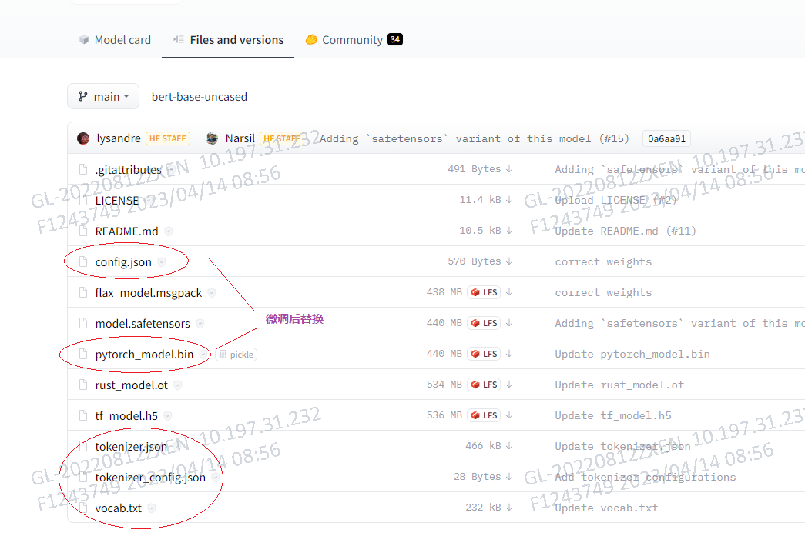

huggingface
语音识别
import librosa
import torch
from transformers import Wav2Vec2ForCTC, Wav2Vec2Tokenizer
import warnings
warnings.filterwarnings("ignore")
#load pre-trained model and tokenizer
tokenizer = Wav2Vec2Tokenizer.from_pretrained("jonatasgrosman/wav2vec2-large-xlsr-53-chinese-zh-cn")
model = Wav2Vec2ForCTC.from_pretrained("jonatasgrosman/wav2vec2-large-xlsr-53-chinese-zh-cn")
# 提取音频, 时间不要太长否则内存会爆
# .\ffmpeg.exe -i .\input.mp4 -ss 00:01:00 -to 00:02:00 -vn -c copy output3.wav
audio_file = f"files/output3.wav"
#load audio file
audio, sampling_rate = librosa.load(audio_file, sr=16_000)
input_values = tokenizer(audio, return_tensors='pt').input_values
# store logits (non-normalized predictions)
logits = model(input_values).logits
# store predicted id's
# pass the logit values to softmax to get the predicted values
predicted_ids = torch.argmax(logits, dim=-1)
# pass the prediction to the tokenzer decode to get the transcription
transcriptions = tokenizer.decode(predicted_ids[-1])
print(transcriptions)
Bert微调问答
🤗 Transformers: State-of-the-art Machine Learning for Pytorch, TensorFlow, and JAX.
下载预训练模型
- 打开 Huggingface模型仓库
- 搜索选择某个模型，如 bert-base-uncased
- 点选 File and versions 下载对应文件

训练微调模型
- 数据预处理，提取训练数据特征，这步Huggingface已经帮我们做好了，调用API就好了
这里关注 SquadExample \ SquadFeatures \ SquadResult
-
SquadExample 是数据集经过处理后提取出的example，使用id进行索引，每个example都包括passage、question、answer等属性，但是passage、question、answer这些属性是用字符串格式保存的，输入到模型中需要进行一些变换，
-
SquadFeatures 则是能够直接输入到模型中的instance。在两者之间定义了一个函数squad_convert_example_to_features 从 SquadExample 到 SquadFeatures 的转换。
这里features并非模型的参数 teatures !!! 可以理解为符合模型输入的实例格式。
-
SquadResult 则是模型的预测结果。
import pickle
from transformers.data.processors.squad import SquadV2Processor, squad_convert_examples_to_features
from transformers import BertTokenizer
if __name__ == '__main__':
# 初始化SQuAD Processor, 数据集, 和分词器
processor = SquadV2Processor()
train_examples = processor.get_train_examples('SQuAD')
# 这里也可以用下载的模型文件文件，填写模型文件夹路径就好了
tokenizer = BertTokenizer.from_pretrained('bert-base-uncased')
# 将SQuAD 2.0示例转换为BERT输入特征
train_features = squad_convert_examples_to_features(
examples=train_examples,
tokenizer=tokenizer,
max_seq_length=384,
doc_stride=128,
max_query_length=64,
is_training=True,
return_dataset=False,
threads=1
)
# 将特征保存到磁盘上
with open('train_features.pkl', 'wb') as f:
pickle.dump(train_features, f)
常见连接层，参
- Linear : 线性全连接层
- Embedding ： Embedding层主要作用就是把输入的每个特征都转换为低维向量，30522是词表大小，512是位置向量大小，2是句子向量大小，在config.json中定义了
- LayerNorm ： 做归一化操作，加快模型收敛
- Dropout ： 主要是为了防止模型过拟合，通过忽略一半数量的特征检测器（让一半的隐层节点值为0），减少特征检测器（隐层节点）间的相互作用
BertForQuestionAnswering(
(bert): BertModel(
(embeddings): BertEmbeddings(
(word_embeddings): Embedding(30522, 768, padding_idx=0)
(position_embeddings): Embedding(512, 768)
(token_type_embeddings): Embedding(2, 768)
(LayerNorm): LayerNorm((768,), eps=1e-12, elementwise_affine=True)
(dropout): Dropout(p=0.1, inplace=False)
)
(encoder): BertEncoder(
(layer): ModuleList(
(0-11): 12 x BertLayer(
(attention): BertAttention(
(self): BertSelfAttention(
(query): Linear(in_features=768, out_features=768, bias=True)
(key): Linear(in_features=768, out_features=768, bias=True)
(value): Linear(in_features=768, out_features=768, bias=True)
(dropout): Dropout(p=0.1, inplace=False)
)
(output): BertSelfOutput(
(dense): Linear(in_features=768, out_features=768, bias=True)
(LayerNorm): LayerNorm((768,), eps=1e-12, elementwise_affine=True)
(dropout): Dropout(p=0.1, inplace=False)
)
)
(intermediate): BertIntermediate(
(dense): Linear(in_features=768, out_features=3072, bias=True)
(intermediate_act_fn): GELUActivation()
)
(output): BertOutput(
(dense): Linear(in_features=3072, out_features=768, bias=True)
(LayerNorm): LayerNorm((768,), eps=1e-12, elementwise_affine=True)
(dropout): Dropout(p=0.1, inplace=False)
)
)
)
)
)
(qa_outputs): Linear(in_features=768, out_features=2, bias=True)
)
- 利用格式化好的测试数据集，训练模型获得对应的weight和bias保存为文件
import torch
from transformers import BertForQuestionAnswering, AdamW
from torch.utils.data import DataLoader, RandomSampler, TensorDataset
# 加载SQuAD 2.0数据集的特征
import pickle
if __name__ == '__main__':
with open('train_features.pkl', 'rb') as f:
train_features = pickle.load(f)
# 是否有GPU
device = torch.device('cuda' if torch.cuda.is_available() else 'cpu')
# 定义训练参数
train_batch_size = 8
num_epochs = 3
learning_rate = 3e-5
# 将特征转换为PyTorch张量
all_input_ids = torch.tensor([f.input_ids for f in train_features], dtype=torch.long)
all_attention_mask = torch.tensor([f.attention_mask for f in train_features], dtype=torch.long)
all_token_type_ids = torch.tensor([f.token_type_ids for f in train_features], dtype=torch.long)
all_start_positions = torch.tensor([f.start_position for f in train_features], dtype=torch.long)
all_end_positions = torch.tensor([f.end_position for f in train_features], dtype=torch.long)
train_dataset = TensorDataset(all_input_ids, all_attention_mask, all_token_type_ids, all_start_positions, all_end_positions)
num_samples = 100
train_dataset = TensorDataset(
all_input_ids[:num_samples],
all_attention_mask[:num_samples],
all_token_type_ids[:num_samples],
all_start_positions[:num_samples],
all_end_positions[:num_samples])
train_sampler = RandomSampler(train_dataset)
train_dataloader = DataLoader(train_dataset, sampler=train_sampler, batch_size=train_batch_size)
# 加载BERT模型和优化器
model = BertForQuestionAnswering.from_pretrained('bert-base-uncased').to(device)
optimizer = AdamW(model.parameters(), lr=5e-5)
# 微调BERT
for epoch in range(num_epochs):
for step, batch in enumerate(train_dataloader):
model.train()
optimizer.zero_grad()
input_ids, attention_mask, token_type_ids, start_positions, end_positions = tuple(t.to(device) for t in batch)
outputs = model(input_ids=input_ids,
attention_mask=attention_mask,
token_type_ids=token_type_ids,
start_positions=start_positions,
end_positions=end_positions)
loss = outputs.loss
loss.backward()
optimizer.step()
# Print the training loss every 500 steps
if step % 5 == 0:
print(f"Epoch [{epoch+1}/{num_epochs}], Step [{step+1}/{len(train_dataloader)}], Loss: {loss.item():.4f}")
# 保存微调后的模型
model.save_pretrained("SQuAD_finetune_bert")
加载微调后模型和参数文件
import torch
# 是否有GPU
from transformers import BertForQuestionAnswering, BertTokenizer
if __name__ == '__main__':
device = torch.device('cuda' if torch.cuda.is_available() else 'cpu')
model_path = r"SQuAD_finetuned_bert"
model = BertForQuestionAnswering.from_pretrained(model_path)
tokenizer = BertTokenizer.from_pretrained(model_path)
question, text = "national treasure of China?", "The giant panda is known as a national treasure of china."
inputs = tokenizer.encode_plus(question, text, add_special_tokens=True, return_tensors="pt")
with torch.no_grad():
outputs = model(**inputs.to(device))
answer_start_index = torch.argmax(outputs.start_logits)
answer_end_index = torch.argmax(outputs.end_logits) + 1
predict_answer_tokens = inputs['input_ids'][0][answer_start_index:answer_end_index]
predicted_answer = tokenizer.decode(predict_answer_tokens)
print(question + " ", predicted_answer)
kaggle
kaggle是一个在线pynb
# 不导入会产生的问题参考：https://blog.csdn.net/qq_43374681/article/details/115469240
import os
os.environ["KMP_DUPLICATE_LIB_OK"]="TRUE"
# Matplotlib是Python的一个绘图库，是Python中最常用的可视化工具之一
%matplotlib inline
import torch
# torch.nn是为神经网络设计的模块化接口。构建于autograd之上，可以用来定义和运行神经网络。
import torch.nn as nn
# NumPy是Python语言的一个扩充程序库。支持高级大量的维度数组与矩阵运算，此外也针对#数组运算提供大量的数学函数库。
# Pandas是基于NumPy 的一种工具，该工具是为了解决数据分析任务而创建的。Pandas 纳##入了大量库和一些标准的数据模型，提供了高效地操作大型数据集所需的工具。Pandas提#供了大量能使我们快速便捷地处理数据的函数和方法。
import numpy as np